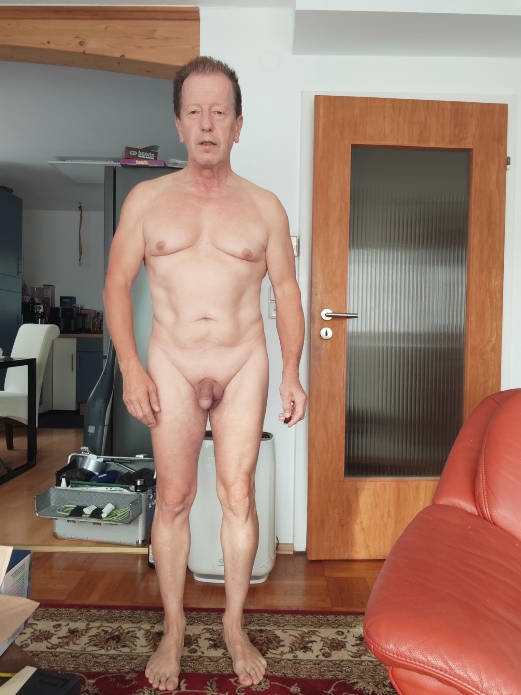
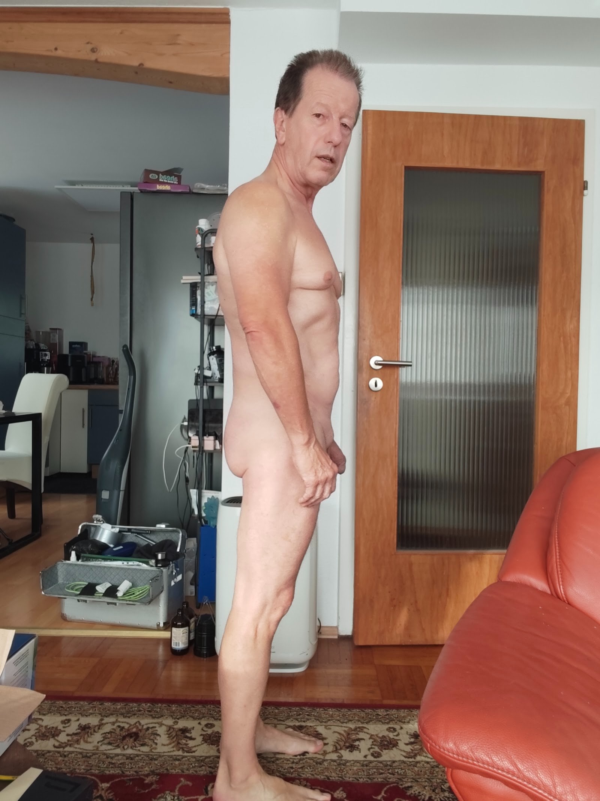
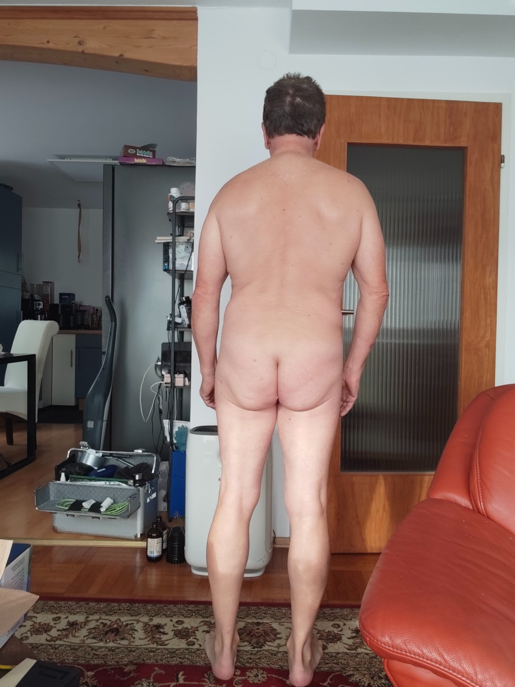
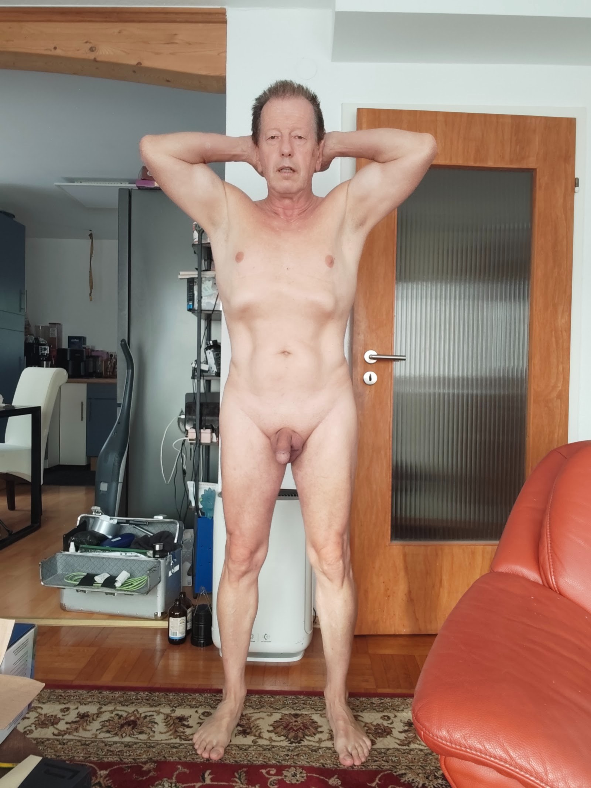
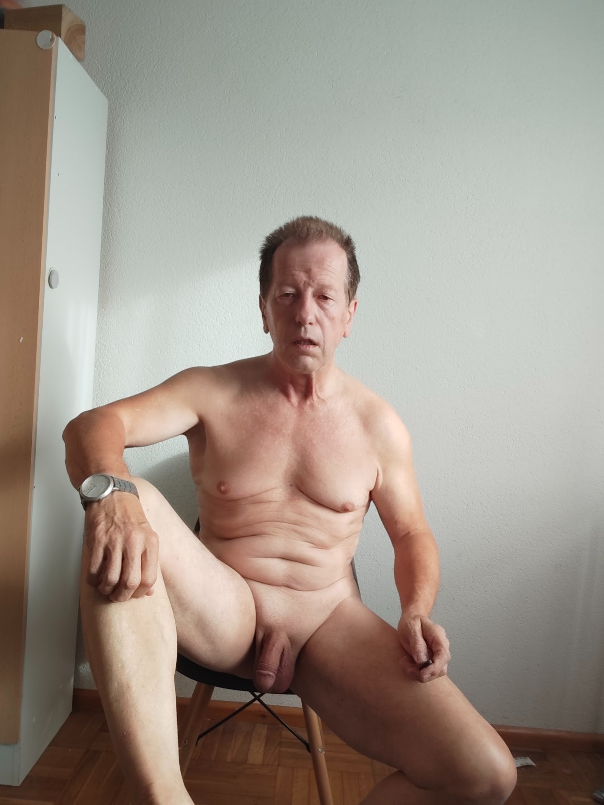
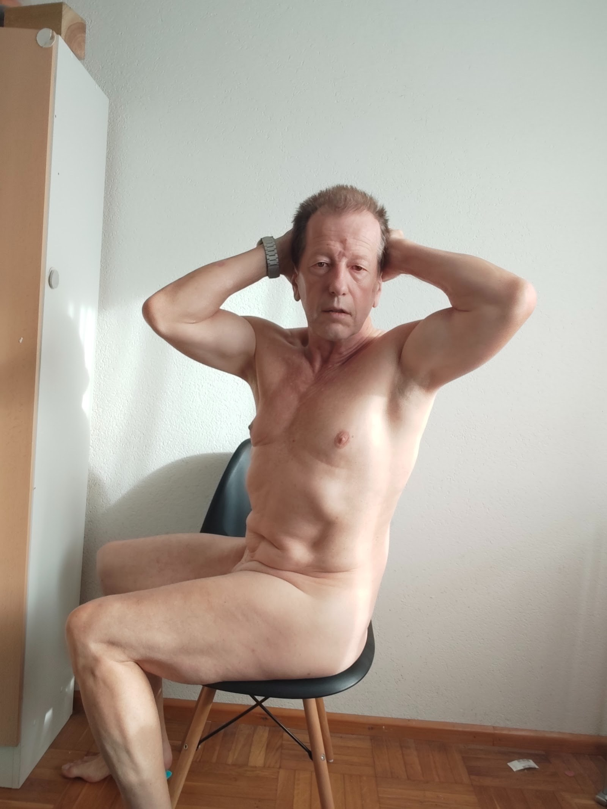
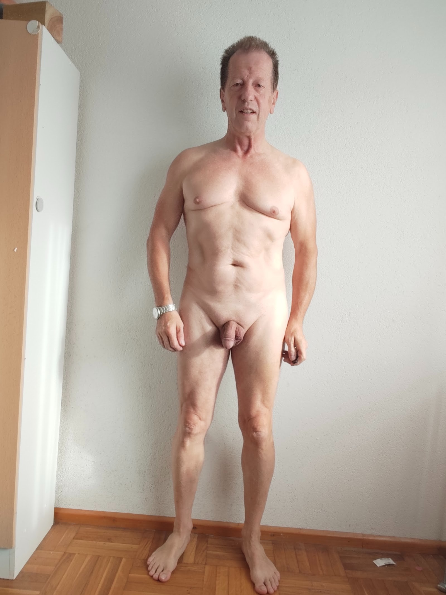
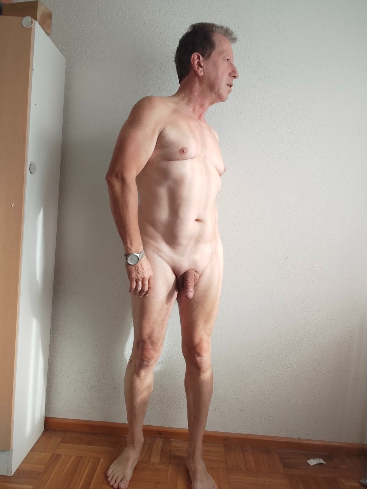
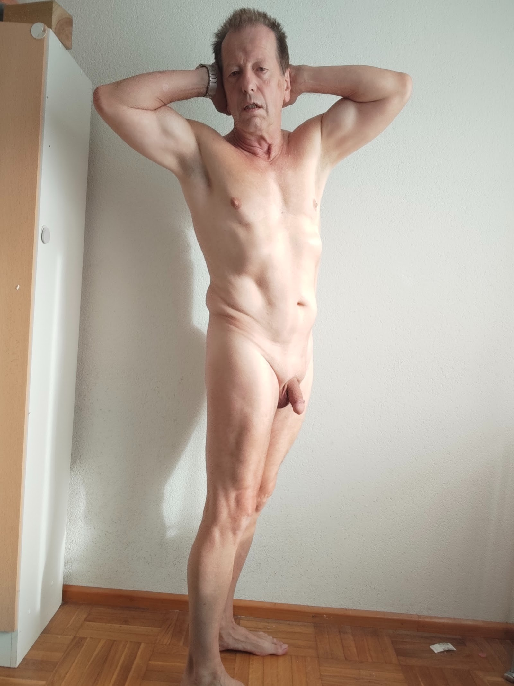
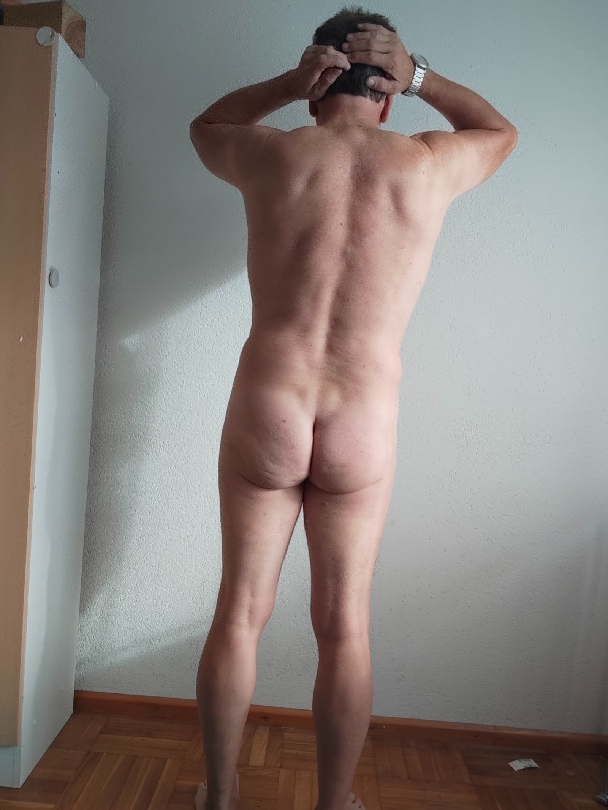

Aktmodell · Galerie
Der Körper
als Vorlage.
Klassische Modellposen – frontal, seitlich, Rückenansicht, stehend und sitzend. Gedacht als Referenz für Zeichengruppen, Kunstschulen und Fotografen, die ein Aktmodell suchen.
Ich stehe als Aktmodell kostenlos zur Verfügung. Anfragen: achimmentzen20@gmail.com · Tel. +49 174 6134194






















Alle Bilder dauerhaft archiviert auf IPFS: ipfs.io/ipfs/bafybeihj6rv3s6n…
Lizenz: Die Fotos dürfen unter Creative Commons BY 4.0 zu künstlerischen Zwecken verwendet werden (Namensnennung: Achim Mentzen).